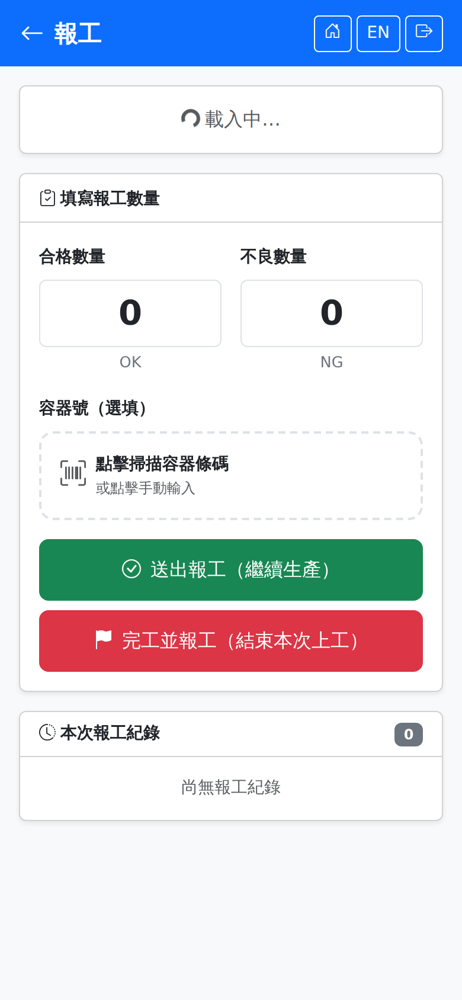

報工Production report
由開工作業頁點「報工」進入，必須先開工才能報工——直接開啟本頁會顯示「缺少上工 Session ID，請先開工」且無法送出。Opened from the production session screen by tapping "Report". You have to have started work first — opening this page directly shows "no session ID, please start work first" and nothing can be submitted.

填寫報工數量Entering the quantities
兩顆送出鈕的差別The difference between the two submit buttons
| 按鈕Button | 作用What it does |
|---|---|
| 送出報工（繼續生產）Submit Report (keep producing) | 回報這一批的數量，上工繼續有效，人仍在線上生產。生產期間可按多次，例如每完成一箱轉移就回報一次。Reports this batch's quantity and keeps the session open, so the operator stays on the job. It can be used as often as needed during production — once per container, for example. |
| 完工並報工（結束本次上工）Finish and Report (end this session) | 回報最後一批數量並同時結束本次上工、結算工時。按下後會出現確認提示。Reports the final quantity and ends the session, settling the hours at the same time. It asks for confirmation first. |
尚未生產完的派工，結束上工後仍可回開工作業頁再次開工，形成下一輪循環；累計良品數達派工量時派工自動結案。If production is not finished, you can return to the production session screen and start another round after ending a session; the dispatch closes automatically once the cumulative good quantity reaches the dispatched quantity.
斷線時報工Reporting when the connection drops
手機偵測到沒有網路時，畫面上方會出現「目前沒有網路。這時按送出的報工會先暫存在手機，恢復連線後自動送出」的提示。Wi-Fi 有訊號但伺服器暫時連不到時也一樣會暫存。每筆報工都帶有唯一識別碼，重送不會重複計數；報工與下工時間記的是按下送出的那一刻，不是送達的時間，所以工時不會被拉長。When the phone detects there is no network, a banner says reports submitted now are saved on the phone and sent when the connection returns. The same happens when Wi-Fi is up but the server is briefly unreachable. Every report carries a unique identifier, so resending never double counts, and the report and clock-out times are recorded at the moment you tapped submit, not when they arrived, so hours are not stretched.
暫存超過 30 分鐘就不再自動送出，要到首頁的待送出清單確認或捨棄；上工本身只能在連線時做。詳見斷線保護。Entries saved for more than 30 minutes are no longer sent automatically — confirm or discard them in the waiting list on the home page. Clocking in itself works only while connected. See Disconnection protection.